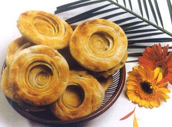

・美食文化・

简介：
油镟为济南传统精细风味小吃。因其形似螺旋，表面呈金黄色，故名油。其外皮酥脆，内瓤柔嫩，葱香透鼻。据说济南的油镟是在100多年前，由齐河县境内徐氏三 兄弟从南京传来。为适应济南人的口味，他们改进了配料，口味变为北方人喜食的咸香味，颇受顾客欢迎，生意十分兴隆，人称"徐家油"。后来许多餐馆广为仿 制，成为济南风味小吃。
油镟为济南传统精细风味小吃。因其形似螺旋，表面呈金黄色，故名油。其外皮酥脆，内瓤柔嫩，葱香透鼻。据说济南的油镟是在100多年前，由齐河县境内徐氏三 兄弟从南京传来。为适应济南人的口味，他们改进了配料，口味变为北方人喜食的咸香味，颇受顾客欢迎，生意十分兴隆，人称"徐家油"。后来许多餐馆广为仿 制，成为济南风味小吃。